Música
Semba, kizomba, kuduro e outros ritmos que representam a música angolana.
Descubra a riqueza da história, cultura, tradições e identidade de Angola.
Explorar AngolaAngola é um país situado na costa ocidental da África. É uma nação de grande diversidade cultural, histórica e natural, marcada pela força do seu povo e pela riqueza das suas tradições.
O ANGOLA 21 é um espaço dedicado à divulgação da identidade nacional, apresentando as províncias, a história, a cultura e o património angolano.
Explore as províncias que formam a República de Angola.
Nenhuma província encontrada.
 01
01
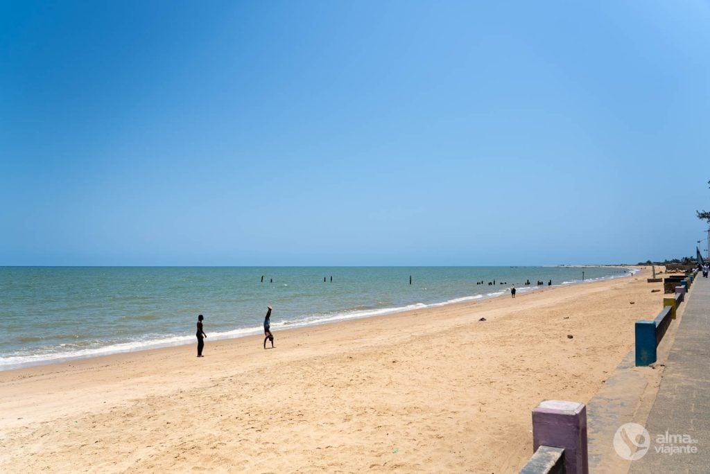
02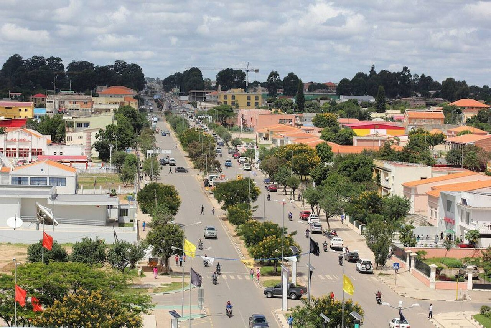
03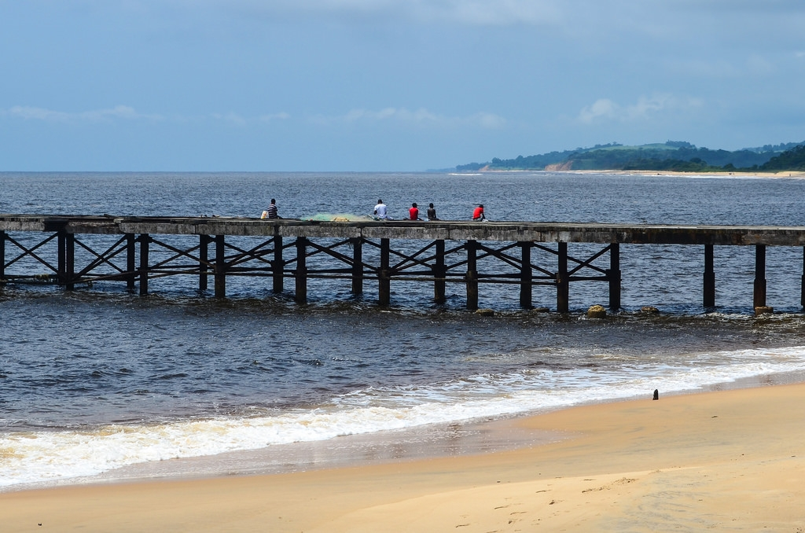
04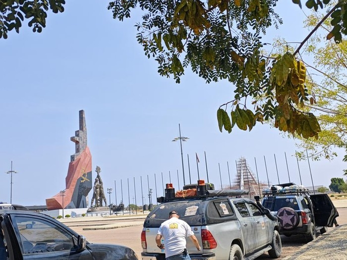
05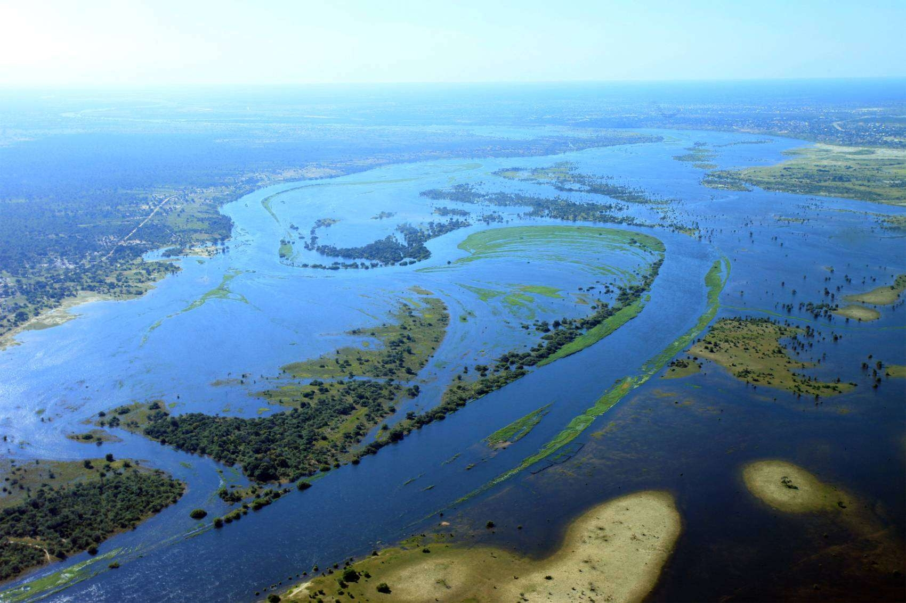
06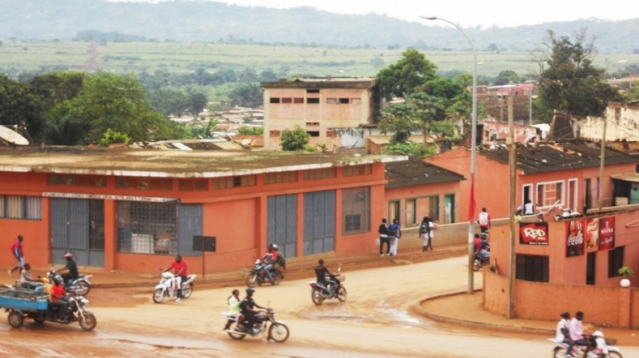
07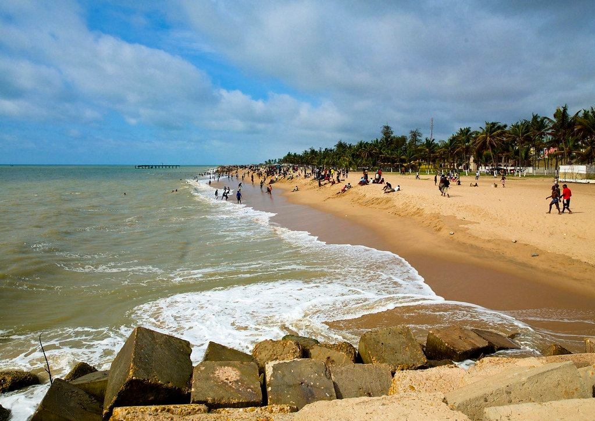
08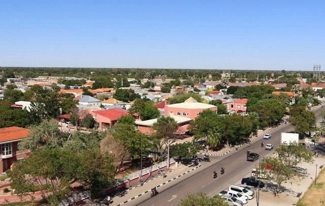
09 10
10
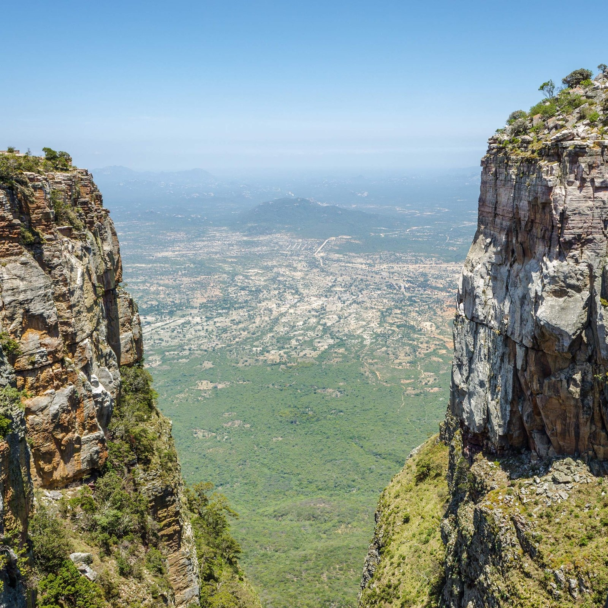
11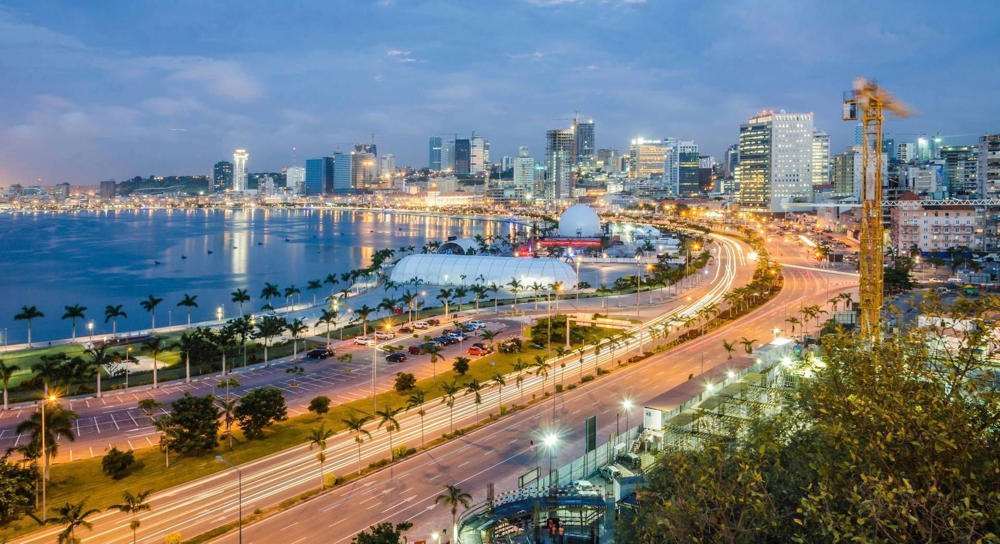
13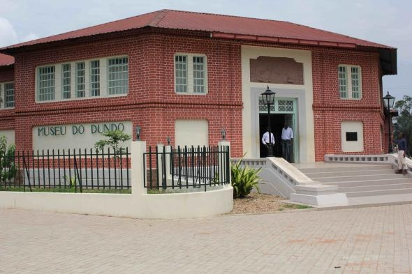
14 15
15
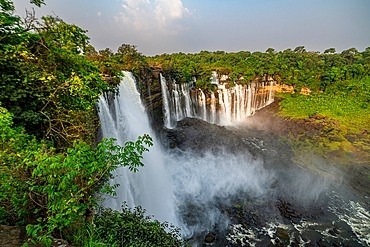
16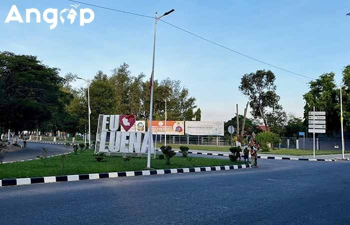
17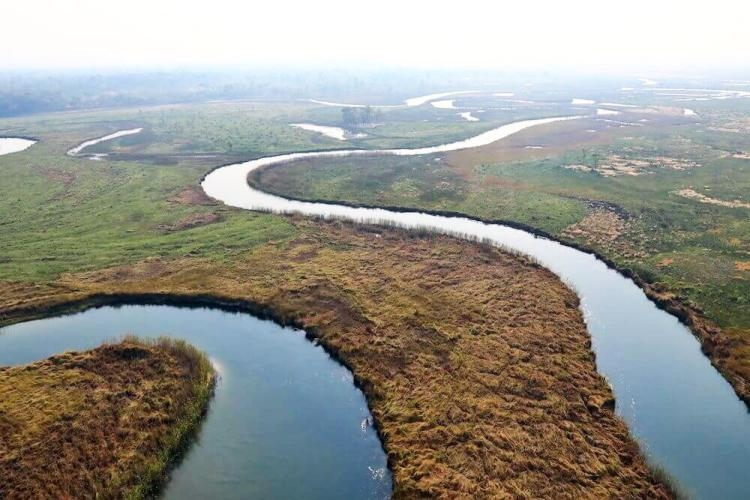
18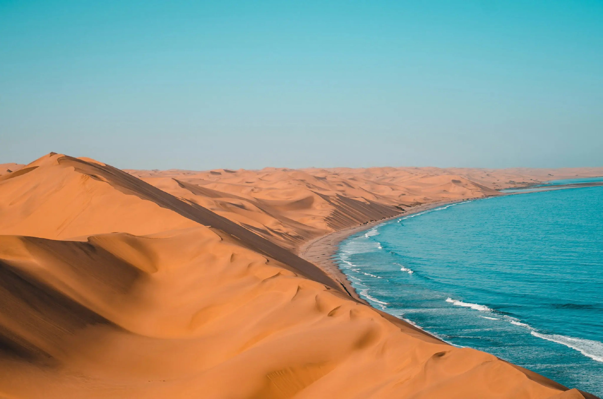
19 20
20
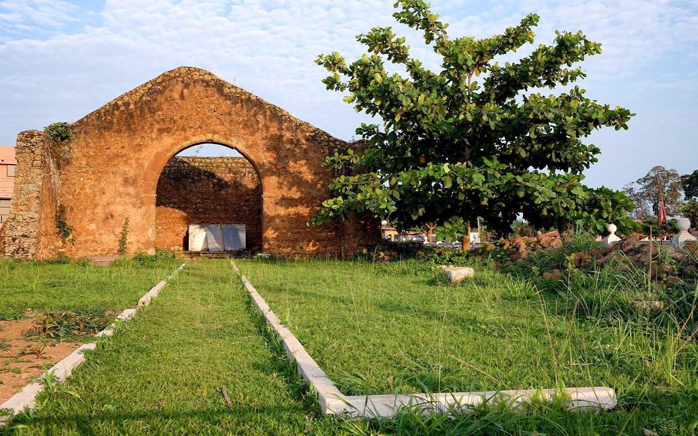
21A história de Angola é marcada por antigos reinos, culturas diversas, resistência colonial e luta pela independência.
A 11 de Novembro de 1975, Angola proclamou a sua independência, tornando-se uma nação soberana.
Semba, kizomba, kuduro e outros ritmos que representam a música angolana.
A dança representa a alegria, a expressão artística e a identidade do povo angolano.
Funge, muamba, calulu e outros sabores tradicionais de Angola.
Costumes, línguas e heranças culturais dos diferentes povos angolanos.